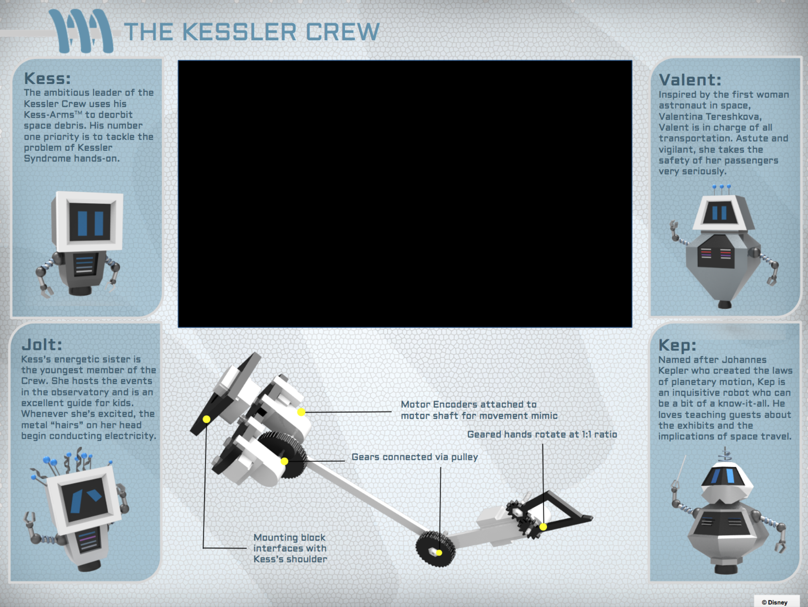
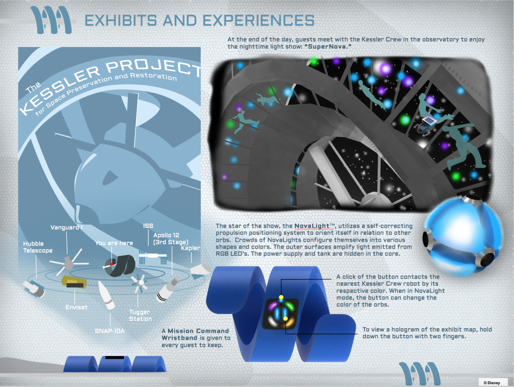

Kessler Project: Walt Disney Imagineering Finalist
Walt Disney Imagineering | January 2018
Chosen as one of six teams from over 250 nationally. More about the
competition here.
Kessler Project is an all-day space adventure that allows guests
to experience the excitement of space travel and to appreciate the
historical significance of many abandoned space stations like the
Tiangong-1 (China’s first space station), the Hubble Telescope, and
the International Space Station, all of which may be damaged by a
phenomenon known as Kessler Syndrome.
Article in the Philadelphia Inquirer here.
*The project was conceived by the
University of Pennsylvania Team and created for the 2018 Walt Disney
Imagineering’s Imaginations Design Competition. This project is the
sole property of Walt Disney Imagineering and all rights to use these
ideas are exclusive to Walt Disney Imagineering. The competition is a
way for students and recent graduates to showcase their talents and
for Walt Disney Imagineering to identify new talent.
Tools used: Maya, KeyShot 6, Photoshop, Illustrator
Things I did: Modeling and texturing for Tracker Center/Kessler
Station slide and the four robots, creative direction (slide design and layout), logo design,
Tracker Center design, hologram graphic, all photoshopped renders, presentation posters and illustrations





